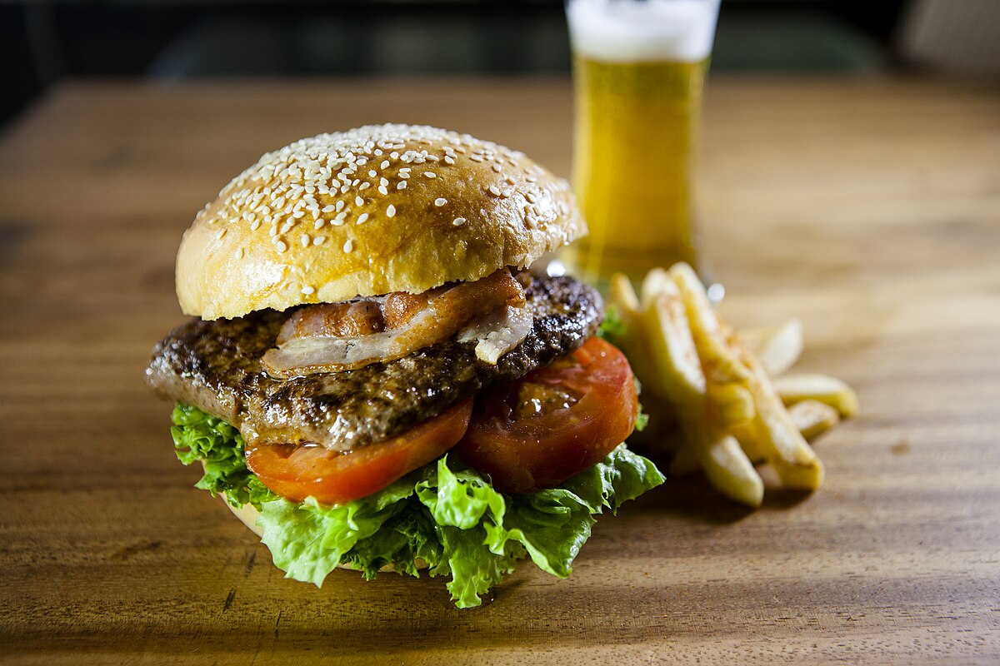

Beef Patty Burger

A freshly prepared burger with a sesame seed bun, crisp lettuce, juicy tomato, melted cheese, and a perfectly cooked beef patty, served on a rustic wooden table.
Ingredients
- Sesame seed bun
- Lettuce
- Tomato
- Cheese
- Beef patty
Steps to Make a Beef Patty Burger
- Prepare the ingredients – wash lettuce, slice tomato, get cheese slices and buns ready.
- Cook the beef patty – season with salt & pepper, then grill or pan-fry until cooked through.
- Toast the buns – lightly toast the sesame seed buns on a pan or grill.
- Assemble the burger – place lettuce and tomato on the bottom bun, add the hot beef patty, then top with cheese.
- Finish & serve – add sauces like ketchup or mayo, put on the top bun, and enjoy!